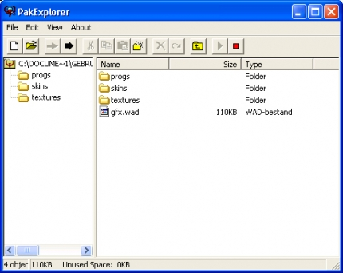
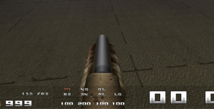
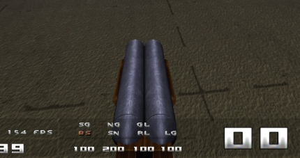
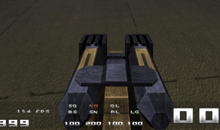
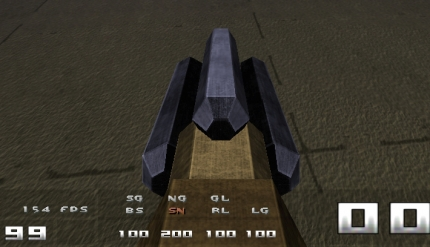
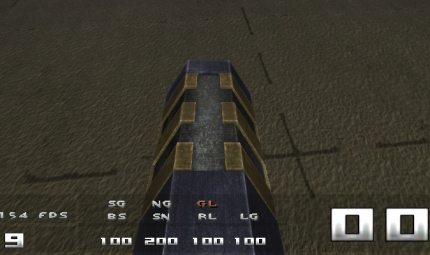
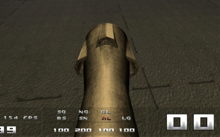
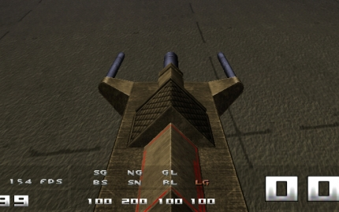

Using modified models
Are you tired of using the old standard models (weapons,armor,ammo) and downloaded some new fancy hot models but can’t get them to work? Then you’re at the right place!
Plagues models
Plagues models are the most popular at the moment.
This one is rather easy to install. Full version of Quake has 2 files in the /quake/id1/ named pak0.pak and pak1.pak.
This .zip file you just downloaded contains a pak2.pak. The only thing we need to do is to extract it to the /quake/id1/ folder. After you started up Quake you can enjoy your new fancy models.
Hint: If you have a pak editor tool like pakexplorer then you can see whats in the pak2.pak file

The folder /progs/ contains all the models.
You have 2 different weapon models:
v_model.mdl (the weapon you’re holding)
g_model.mdl (the weapon you see around the map)
v_shot.mdl (boomstick - impulse 2)
v_shot2.mdl (super shotgun - impulse 3)
v_nail.mdl (nailgun - impulse 4)
v_nail2.mdl (super nailgun - impulse 5)
v_rock.mdl (grenade launcher - impulse 6)
v_rock2.mdl (rocket launcher - impulse 7)
v_light.mdl (shaft - impulse 8)
g_shot.mdl (boomstick)
g_shot2.mdl (super shotgun)
g_nail.mdl (nailgun)
g_nail2.mdl (super nailgun)
g_rock.mdl (grenade launcher)
g_rock2.mdl (rocket launcher)
g_light.mdl (shaft )
armod.mdl (model for all armors (GA,YA,RA))
The folder /skins/ contains player skins. Can be used for teamskin “skinname” and enemyskin “skinname”.
The folder /textures/ contains the textures for the new models.
v_shot.png or tga (boomstick - impulse 2)
v_shot2.png or tga (super shotgun - impulse 3)
v_nail.png or tga (nailgun - impulse 4)
v_nail2.png or tga (super nailgun - impulse 5)
v_rock.png or tga (grenade launcher - impulse 6)
v_rock2.png or tga (rocket launcher - impulse 7)
v_light.png or tga (shaft - impulse 8)
g_shot.png or tga (boomstick)
g_shot2.png or tga (super shotgun)
g_nail.png or tga (nailgun)
g_nail2.png or tga (super nailgun)
g_rock.png or tga (grenade launcher)
g_rock2.png or tga (rocket launcher)
g_light.png or tga shaft )
armor_0.png or tga (texture for GA armor)
armor_1.png or tga (texture for YA armor)
armor_2.png or tga (texture for RA armor)
If you only want to use some of the models, you can extract the pak2.pak file by pressing the big black arrow. It gets extracted to /quake/id1/ remove the models/textures you don’t like and remove the pak2.pak (.pak files ALWAYS overrides folders).
You can use some models of plague and some of someone else like rouhis made some nice models.
*** Remember that most leagues doesn’t allow modified models, the models get checked before on official game with f_modified ***
Some screenshots






